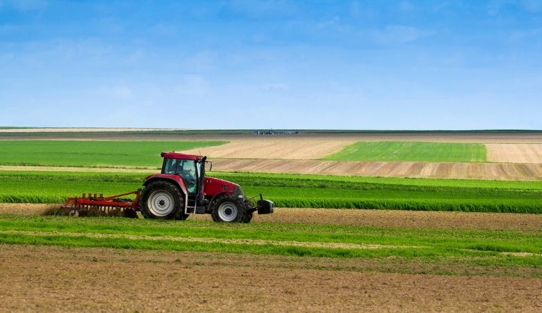

Na região Sudeste, assim como na agricultura da região Sul, atividades agrícolas com uso de alta tecnologia são predominantes. Apesar de a agricultura encontrar-se mais subordinada à indústria, é importante destacar também os altos índices de produtividade e o excelente solo nesta região. Por outro lado, com a grande presença de maquinários, a geração de empregos manuais é limitada, mas a oferta cresce nas agroindústrias. A região sudeste é considerada a região mais forte economicamente. Ela reúne São Paulo, Rio de Janeiro, Minas Gerais e Espírito Santo. O Sudeste se destaca, no agropecuário, pela produção de cana-de-açúcar e de carne bovina. Cerca de 50% da cana brasileira é produzida ali. Nesse sentido, as principais culturas cultivadas são o café, a cana-de-açúcar e a fruticultura – com ênfase para os laranjais -, além de algodão, amendoim, milho, mandioca, arroz, feijão, soja e arroz.
A região é a mais densamente habitada e mais rica do país, possuindo uma grande variedade de tipos de clima e vegetação. A agricultura é altamente desenvolvida na região e impulsiona toda a cadeia produtiva do setor, incluindo outras indústrias como as de mecânica e química. O relevo da região Sudeste é bastante diverso, com planícies costeiras largas que formam amplas baixadas litorâneas, bem como serras elevadas, como as serras da Mantiqueira, da Canastra e do Mar. A vegetação da região varia de acordo com o clima, mas a maior parte da vegetação é da Mata Atlântica, que sofreu muita destruição devido à urbanização e à expansão agrícola. Em Minas Gerais, a vegetação predominante é do tipo Cerrado e Caatinga. No que diz respeito ao clima, a região apresenta uma variedade de tipos de clima. Na costa, predomina o clima tropical, com temperaturas altas e duas estações bem definidas: um verão chuvoso e um inverno seco. Nos planaltos, o clima é de altitude tropical, com grandes variações de temperatura.
Por mais impressionantes que as cifras sejam, não são só as vendas dos produtos agrícolas que movimentam a economia do sudeste e do restante do Brasil: este setor acaba movimentando muitos outros ao longo de sua cadeia produtiva. A região se destaca por ter uma agricultura extremamente desenvolvida. Os empreendedores do agronegócio costumam investir no uso de máquinas agrícolas de última geração, defensivos agrícolas de ponta e fertilizantes potentes, de modo a tornar a lavoura mais produtiva. Consequentemente, muitas outras indústrias se beneficiam do crescimento do setor, como a mecânica e a química.